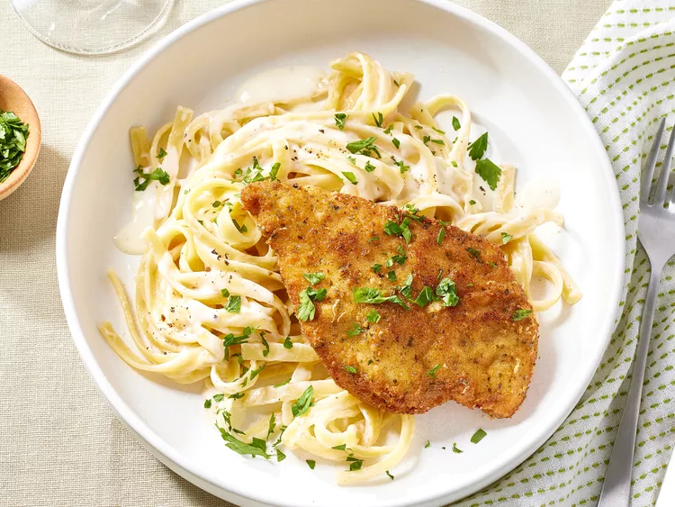

Copycat Chicken Fritta

This copycat chicken fritta features juicy fried chicken cutlets with a delicate, lightly crisp Asiago and breadcrumb crust, served over fettuccine in a luxurious, creamy Asiago cheese sauce. You'll love this homemade version of the Olive Garden favorite.
Ingredients
- 12 ounces fettuccine
- 1/2 cups Italian-seasoned breadcrumbs
- 1/4 cup all-purpose flour
- 1/2 cups finely grated Asiago cheese, divided 1 cup whole milk
- 4 (4 ounce) chicken breast cutlets
- 3 teaspoons kosher salt, divided
- 1/2 teaspoon freshly ground black pepper, divided
- 2 cups vegetable oil for frying, or as needed
- 1/4 cup unsalted butter
- 1 tablespoon minced garlic
- 1 1/2 cups heavy whipping cream>
- 1 tablespoon finely chopped fresh flat-leaf parsley
Steps
- Preheat the oven to 200 degrees F (95 degrees C). Line a rimmed baking sheet with paper towels, and set a wire rack inside
- Bring a large pot of lightly salted water to a rolling boil. Cook fettuccine at a boil until tender yet firm to the bite, about 8 minutes. Drain pasta in a colander over a heatproof bowl; reserve 1 1/2 cups pasta cooking water. Set fettuccine aside, and reserve pot.
- While pasta cooks, stir together breadcrumbs, flour, and 1/2 cup Asiago in a shallow dish until combined. Pour milk into a separate shallow dish. Season chicken on both sides with 1 teaspoon of the salt and 1/4 teaspoon of the pepper. Working with 1 cutlet at a time, dredge chicken in breadcrumb mixture. Dip in milk, and coat again in breadcrumb mixture, pressing firmly to adhere. Place prepared chicken on a plate.
- Pour oil to a depth of 1/4-inch in a large skillet; heat oil over medium-high heat to 350 degrees F (175 degrees C). Place prepared chicken in hot oil, and pan-fry until golden brown and cooked through, 2 to 3 minutes per side. Transfer fried chicken to the prepared wire rack. Once all chicken is fried, remove paper towels.
- Place the baking sheet in the preheated oven to keep chicken warm until ready to serve.
- Melt butter over medium heat in the reserved pasta pot. Add garlic, and cook, stirring constantly, until fragrant and butter is foamy, about 2 minutes. Stir in heavy cream, and cook until bubbling, about 2 minutes. Whisk in remaining 2 cups Asiago, stirring constantly until thickened, 1 to 2 minutes.
- Add cooked pasta, and remaining 2 teaspoons salt and 1/4 teaspoon pepper; cook, stirring constantly, until pasta is coated in sauce, about 2 minutes, adding reserved cooking liquid as needed, 1/4 cup at a time, to thin the sauce.
- Slice chicken. Divide pasta among 4 large plates; top evenly with chicken, and garnish with parsley.